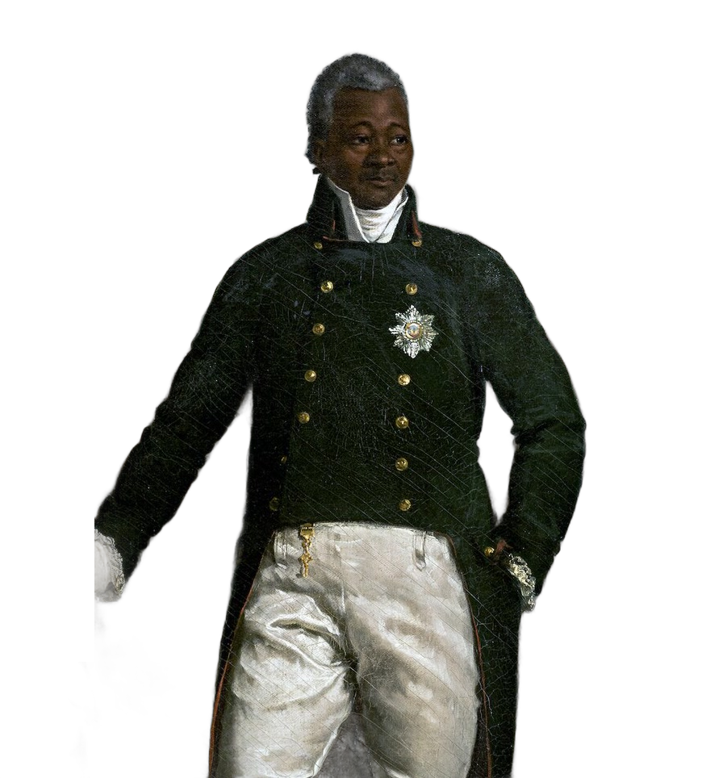
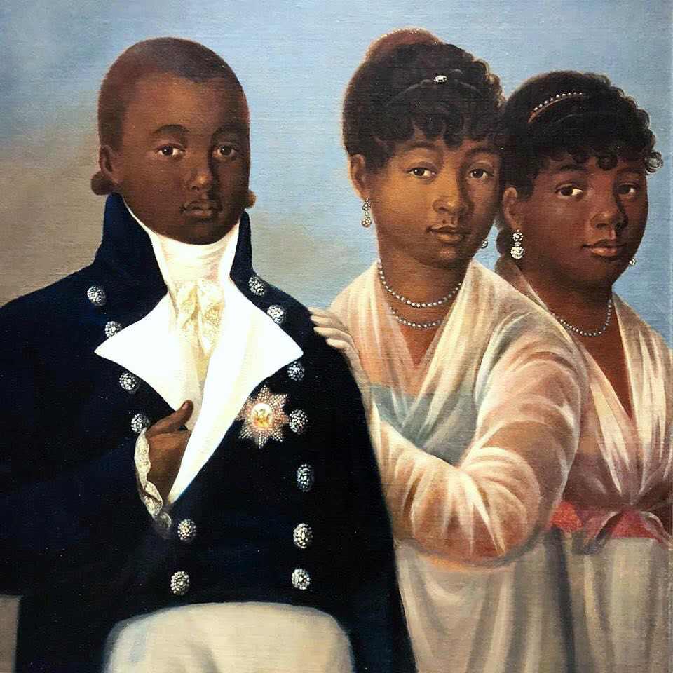
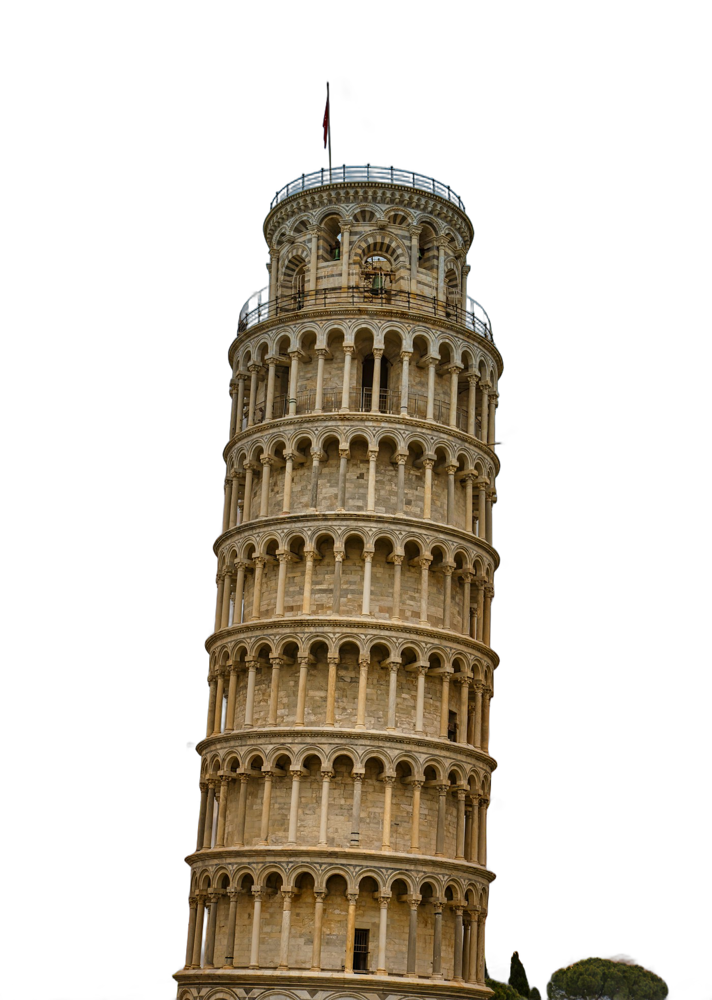

REINE

DISTANCE · ROYAUME → TOMBE0 KM
REC 00:00:00:00
PISE · 1851
ROYAUME

Marie-Louise · reine
Henri Christophe · roi
ROYAUME D'HAÏTI
1811 — 1820
1811 — 1820
CITADELLE
Citadelle Laferrière · Milot
19°34′N · 72°14′O
PATRIMOINE MONDIAL
PATRIMOINE MONDIAL
1820

8 OCT. 1820
PALAIS SANS-SOUCI
MILOT · HAÏTI
MILOT · HAÏTI

Les enfants du roi
Haïti · 1820
Londres · 1821
Pise · 1824
EXIL · 1820 — 1824
CAP-HAÏTIEN → LONDRES → PISE
CAP-HAÏTIEN → LONDRES → PISE
PISE
Pise · Toscane
†Princesse1831
†Princesse1839
30
1824
1851
27 ans
1851
✝
MARIE-LOUISE
REINE D'HAÏTI
† 1851
Église San Donnino · Pise
ILLUSTRATION
43°43′N · 10°24′E
43°43′N · 10°24′E
TOSCANE

Haïti
Italie
OUI
NON
Répondez ici
HISTOIRE D'HAÏTI · 1851